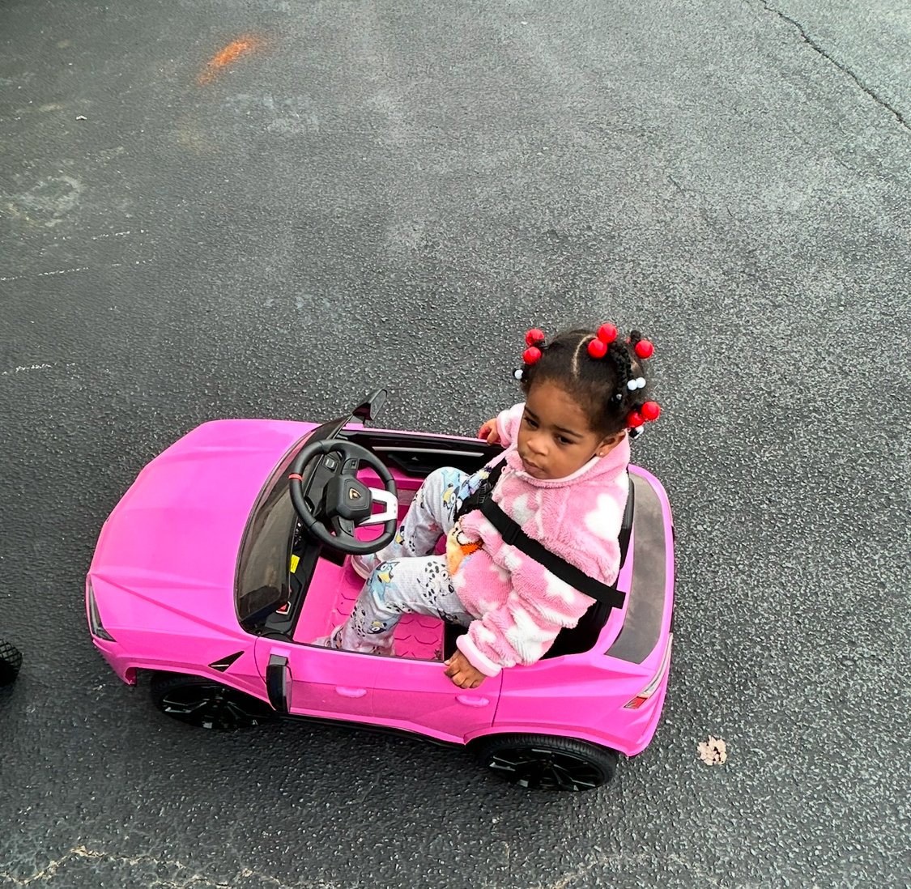
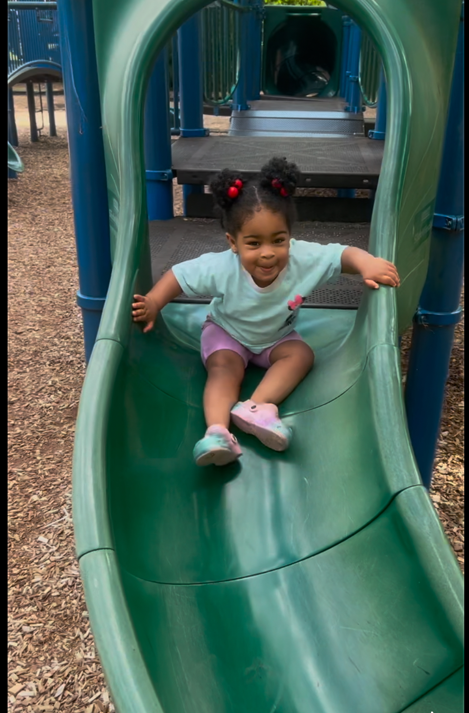

Oh the Place's I've Been!
Everyday is an adventure for Epiphany. Either with her parents or grandparents she is going to do something exciting. Her favorite place to go currently is the Aquarium and the Discovery Museum. She loves anything that is hands on. On days when Epiphany is with her grandparents her favorite thing to do is to go to Hamilton Place Mall for ice cream and to play with the other kids. With mom and dad we always bring Champ along so we get outside and she gets to run and play at the playground.
Me Having Fun


Future Adventures
Now that Epiphany is walking and talking we can do more things with her. We are currently working on teaching her to ride her tricycle which she loves becasue she doesn't have to walk. We also are planning to take her places like Little Gym and Musicologie so she can be exposed to gymnastics and to music early. Overall we are looking to plan fun things that will expose her to new stuff, new people, and burn some energy.